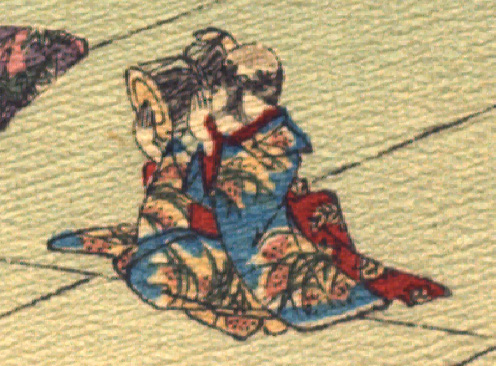

雀。青色の着物をまとっている。袂が長めなので娘と思われる。袖から出ている手は人間のものである。座って、右肩に小鼓を担ぎ、打っている。
出典：親書誌：U426_nichibunken_0109：Le moineau qui a la langue coupée／日付：2006／資源識別子：U426_nichibunken_0109_0004_0004
Copyright (c)2010- International Research Center for Japanese Studies, Kyoto, Japan. All rights reserved.